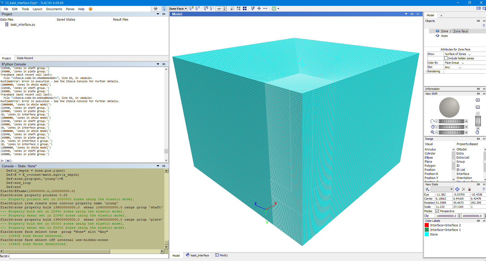
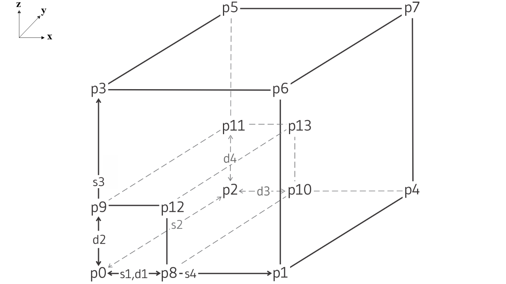
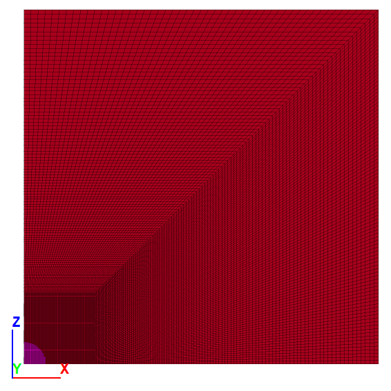
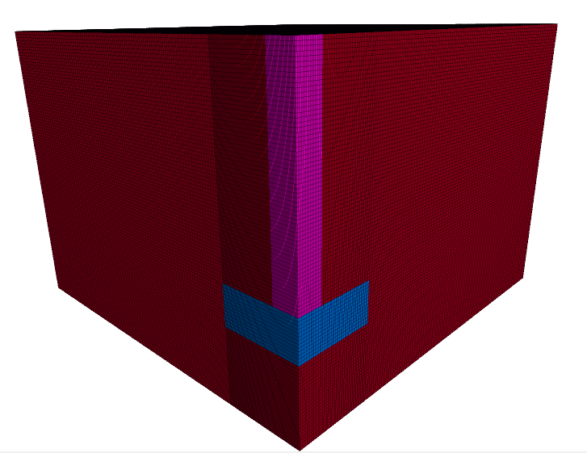
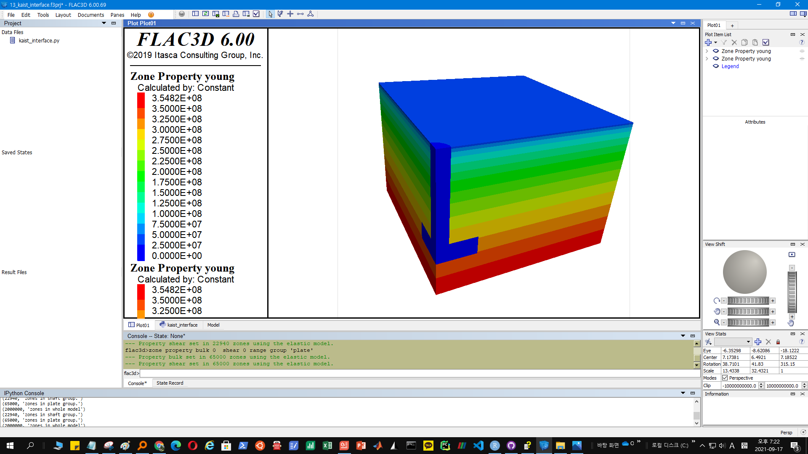
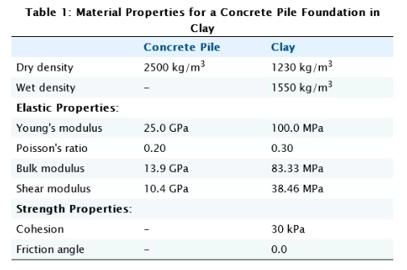
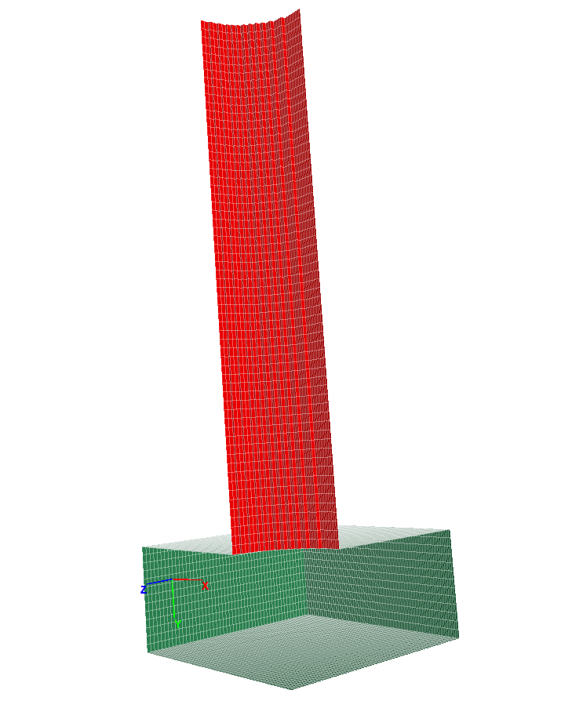

1 KAIST Model
1.1 Initial Configuration

import itasca as it
import numpy as np
np.set_printoptions(threshold=20)
it.command("python-reset-state false")
from itasca import zonearray as za
from itasca import gridpointarray as gpa
# PARAMETERS #
# Dimensions
_D_shaft = 1
_H_shaft = 7.45
_T_plate = 1.5
_B_footing = 3.25
_D_footing = _H_shaft + _T_plate
_B_soil = _B_footing*5
_D_soil = _D_footing+3
# Mesh Details
_radial = 50
_perimeter = 2*_radial
_axial = 2*_radial
_outer = 2*_radial
# Concrete Properties
_bulk = 13.9e9
_shear = 10.4e9
# Soil Properties
_E_o = 1e7
_const = 1e8
_poisson = 0.25
# Interface Properties
_stiff_norm = 1e8
_stiff_shear = 1e81.2 Zones

# ZONE #
command_zone = """
model new
z crea r-t p 0 (0,0,0) ...
p 1 ({B_soil},0,0) ...
p 2 (0,{D_soil},0) ...
p 3 (0,0,{B_soil}) ...
p 4 ({B_soil},{D_soil},0) ...
p 5 (0,{D_soil},{B_soil}) ...
p 6 ({B_soil},0,{B_soil}) ...
p 7 ({B_soil},{D_soil},{B_soil}) ...
p 8 ({B_footing},0,0) ...
p 9 (0,0,{B_footing}) ...
p 10 ({B_footing},{D_soil},0) ...
p 11 (0,{D_soil},{B_footing}) ...
p 12 ({B_footing},0,{B_footing}) ...
p 13 ({B_footing},{D_soil},{B_footing}) ...
size {radial} {axial} {perimeter} {outer} ...
rat 1 1 1 1.01 ...
fill
"""
command = command_zone.format(
B_footing = _B_footing,
B_soil = _B_soil,
D_soil = _D_soil,
radial=_radial,
axial = _axial,
perimeter = _perimeter,
outer = _outer)
it.command(command)

1.3 Group
# GROUP #
p = za.pos()
x,y,z = p.T
print(it.zone.count(), "zones in whole model")
shaft = reduce(np.logical_and, (np.sqrt(x**2+z**2)<_D_shaft, y<_H_shaft))
za.set_group(shaft, "shaft") # set the zones with shaft = true have "shaft" and "geometry"
print(za.in_group("shaft").sum(), "zones in shaft group.") #output how many zones are in the corner group
plate = reduce(np.logical_and, (x<_B_footing,z<_B_footing, y>_H_shaft,y<_D_footing))
za.set_group(plate, "plate") # set the zones with plate = true have "plate" and "geometry"
print(za.in_group("plate").sum(), "zones in plate group.") #output how many zones are in the corner group1.4 Constitutive Model
Besides standard looping as depicted above, one can easily loop over sets of model objects (i.e., zones, gridpoints, structural element nodes, etc.) using the loop foreach construct. In this case, a container of objects must be given by a FISH intrinsic such as zone.list. A practical use of the loop foreach construct is to install a nonlinear initial distribution of elastic moduli in a FLAC3D grid. Suppose that the Young’s modulus at a site is given by this equation:
\[ E = E_0 + c \sqrt{z} \] where z is the depth below surface, and c and E∘ are constants. We write a FISH function to install appropriate values of bulk and shear modulus in the grid, as in this example:
# CONSTITUTIVE MODEL
it.command("""
zone cmodel assign elastic range group "Radial Tunnel1"
zone cmodel assign elastic range group 'shaft'
zone cmodel assign elastic range group 'plate'
fish define fname(E_o,const)
loop foreach pnt zone.list
z_depth = zone.pos.y(pnt)
E = E_o+const*math.sqrt(z_depth)
zone.prop(pnt,'young')=E
end_loop
end
@fname({E_o_},{const_})
zone property poisson {poisson_}
plot item create zone contour property name 'young'
""".format(E_o_=_E_o,const_=_const,poisson_=_poisson))
it.command("""
zone property bulk {bulk} shear {shear} range group 'shaft'
zone property bulk {bulk} shear {shear} range group 'plate'
""".format(bulk=_bulk,shear=_shear))Again, you can verify correct operation of the function by printing or plotting shear and bulk moduli.
In the function install, the loop takes place over all zones in the global list of zones. The FISH statement loop foreach is a variation of the loop statement that sets pnt to each zone in zone.list. Inside the loop, the z-coordinate of each zone centroid is used to calculate the Young’s modulus, given in the equation above. We assume that the datum (or ground surface reference point) is at z = 0. The variables zone.pos.z(pnt) and zone.prop(pnt, ‘young’) are zone intrinsics. (Recall that we talked about the gridpoint intrinsic gp.force.unbal earlier.) Here, we set properties directly from within a FISH function, rather than with a zone property command as in an earlier example.
# SOFTENING MODEL #
#it.command("""
#zone cmodel assign strain-softening range group "Radial Tunnel1"
#zone property density 2500 bulk 2e8 shear 1e8 range group "Radial Tunnel1"
#zone property cohesion 2e6 friction 45 tension 2e5 dilation 10 range group "Radial Tunnel1"
#zone property table-friction 'fri' table-cohesion 'coh' table-dilation 'dil' range group "Radial Tunnel1"
#table 'fri' add (0, 45) (.05, 42) (.1, 40) (1, 40)
#table 'coh' add (0,2e6) (.05,1e6) (.1,5e5) (1,5e5)
#table 'dil' add (0, 10) (.05, 3) (.1, 0)
#""")

1.5 Soil-Structure Interface
# INTERFACE GROUP #
it.command("""
zone interface 'interface 1' create by-face separate range group 'plate' group 'Radial Tunnel1'
zone interface 'interface 1' node property stiffness-normal {stiff_norm_} stiffness-shear {stiff_shear_}
zone interface 'interface 2' create by-face separate range group 'shaft' group 'Radial Tunnel1'
zone interface 'interface 2' node property stiffness-normal {stiff_norm_} stiffness-shear {stiff_shear_}
""".format(stiff_norm_=_stiff_norm, stiff_shear_=_stiff_shear))
1.6 Boundary Conditions
1.7 Initial Equilibrium
1.8 Alterations
1.9 Results
(2000000, 'zones in whole model')
(22940, 'zones in shaft group.')
(65000, 'zones in plate group.')
flac3d>zone interface 'interface 1' create by-face separate range group 'plate' group 'Radial Tunnel1'
--- 11697 gridpoints duplicated, 23160 surface faces created.
--- 47 gridpoints skipped on internal edge.
--- 11580 faces on one side were assigned the group name Interface 1 in slot Interface.
flac3d>zone interface 'interface 1' node property stiffness-normal 1e8 stiffness-shear 1e8
--- Property Normal Stiffness set in 11744 interface 1 nodes.
--- Property Shear Stiffness set in 11744 interface 1 nodes.
flac3d>zone interface 'interface 2' create by-face separate range group 'shaft' group 'Radial Tunnel1'
--- 2961 gridpoints duplicated, 5704 surface faces created.
--- 2852 faces on one side were assigned the group name Interface 2 in slot Interface.
flac3d>zone interface 'interface 2' node property stiffness-normal 1e8 stiffness-shear 1e8
--- Property Normal Stiffness set in 2961 interface 2 nodes.
--- Property Shear Stiffness set in 2961 interface 2 nodes.